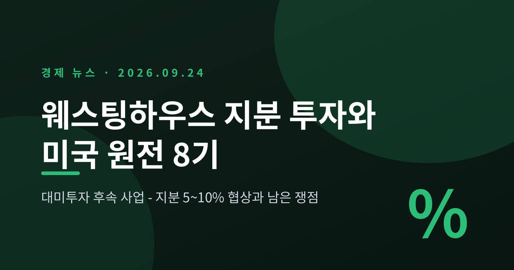
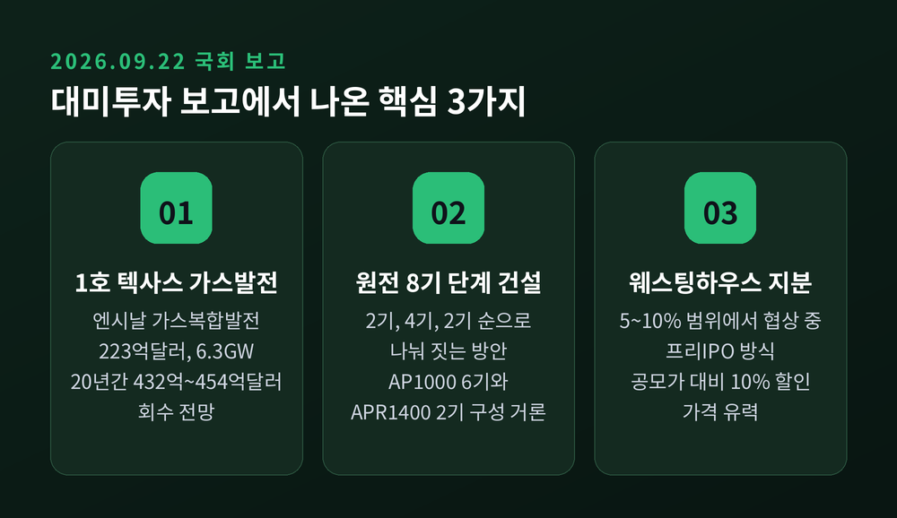
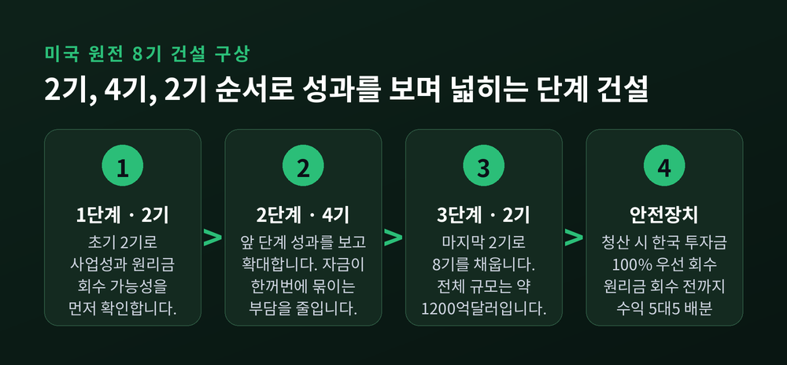
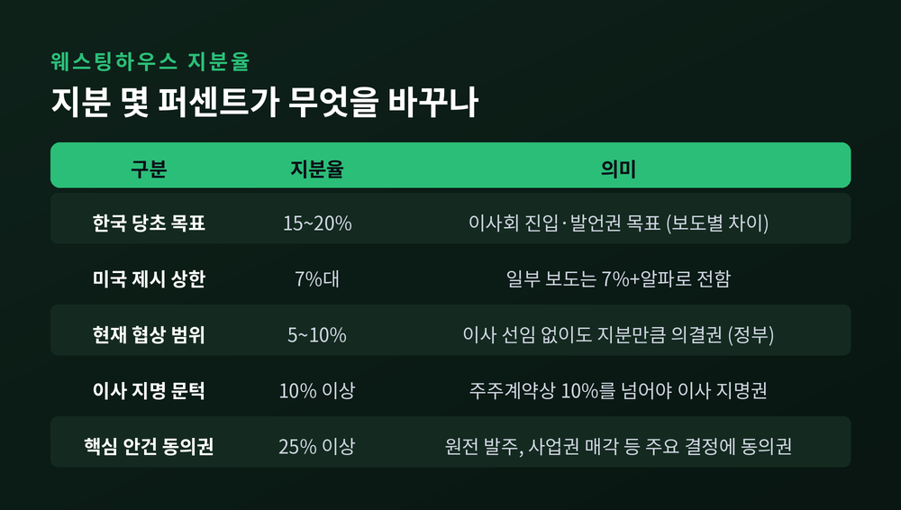
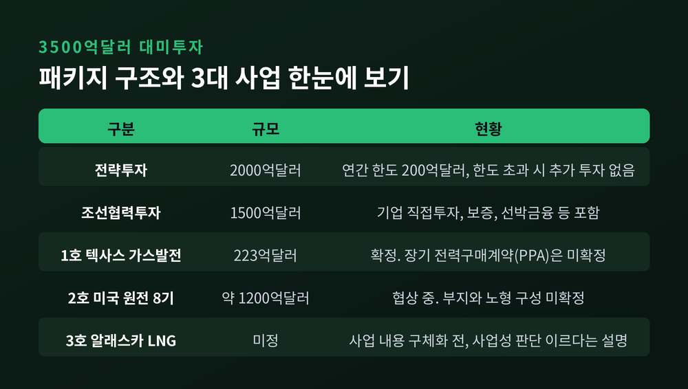
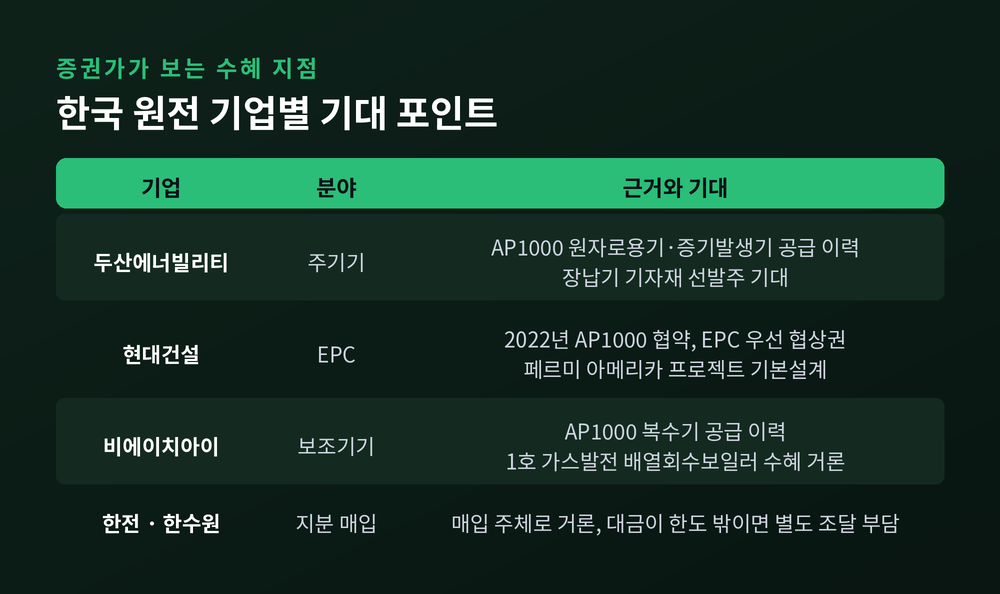
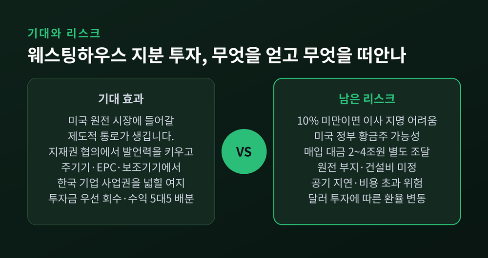

대미투자 1호 사업이 텍사스 가스발전으로 정해지면서, 시선은 곧바로 그다음 사업으로 옮겨갔습니다. 바로 미국 원전 8기 건설과 웨스팅하우스 지분 투자입니다. 이번 글에서는 9월 22~23일 보도를 바탕으로 무엇이 논의되고 있는지, 왜 지분율 몇 퍼센트를 두고 줄다리기가 벌어지는지 차분히 정리해 보겠습니다.
세 줄 요약
- 정부는 9월 22일 국회에 대미투자 1호로 텍사스 엔시날 가스발전(223억달러)을 보고했고, 후속 사업으로 미국 대형 원전 8기와 알래스카 LNG를 제시했습니다.
- 원전은 2기→4기→2기 순으로 나눠 짓는 방안이 거론되며, 이와 맞물려 웨스팅하우스 지분 5~10% 인수가 협상 중입니다. 한국은 당초 15~20%와 이사회 진입을 원했고, 미국은 7%대를 상한으로 제시한 것으로 전해졌습니다.
- 관건은 지분율 자체보다 의결권의 실효성, 그리고 한국 기업이 따낼 구체적 사업권입니다. 매입 대금이 대미투자 한도 밖이라는 점도 부담으로 남아 있습니다.
무슨 일이 있었나 — 국회에 보고된 '3대 대미투자'
9월 22일, 김정관 산업통상부 장관이 국회 산업통상자원중소벤처기업위원회에 대미 전략투자 추진 계획을 보고했습니다. 재정경제부도 같은 날 재정경제기획위원회에 보고했습니다. 한미전략투자특별법에 따른 사전보고 절차입니다.
첫 사업은 미국 텍사스주 엔시날에 짓는 가스복합화력발전소입니다. 총사업비는 223억달러, 우리 돈 약 30조원입니다. 설비용량은 6.3GW로 전해졌습니다. 정부는 20년 동안 432억~454억달러를 벌어 원리금을 회수할 수 있다고 보고, 이 사업에 '상업적 합리성'이 있다고 판단했습니다.
2·3호 후보로는 미국 내 대형 원전 8기 건설과 알래스카 LNG 개발이 함께 제시됐습니다. 다만 두 사업은 아직 정부의 추진 결정이 내려지지 않았습니다. 별도의 사업성 검증과 한미 추가 협의를 거쳐야 합니다. 알래스카 LNG는 "상업적 합리성을 판단하기 이르다"는 것이 정부 설명이었습니다.

원전 8기는 어떻게 짓나 — '2→4→2' 단계 구상
파이낸셜뉴스가 전한 여권 관계자 설명에 따르면, 한미는 8기를 한 번에 짓지 않는 방안을 논의하고 있습니다. 먼저 2기를 짓고, 이어 4기, 마지막으로 2기를 짓는 방식입니다. 원전은 보통 여러 기를 묶어 건설합니다. 앞 단계의 성과를 확인하고 다음으로 넘어가면 막대한 자금이 한꺼번에 묶이는 부담도 덜 수 있습니다.
사업 규모는 약 1200억달러로 알려졌습니다. 2기당 최대 300억달러라는 보도와 나란히 놓으면 8기 합계와 맞아떨어집니다. 노형은 웨스팅하우스의 AP1000 6기, 한국형 APR1400 2기로 구성하는 방안이 거론됩니다. 미국은 AP1000을 먼저 지어야 한다는 쪽이었고, 한국은 APR1400이 최소 2기 이상 우선 건설돼야 한다고 맞서 왔습니다. APR1400을 넣을지, 넣는다면 언제인지는 아직 확정되지 않았습니다.
안전장치도 몇 가지 담겼습니다. 사업이 중간에 청산되면 한국이 투입한 돈을 먼저 100% 돌려받습니다. 원리금을 회수할 때까지는 수익을 한미가 5대 5로 나누고, 회수가 끝난 뒤에야 미국 몫이 커집니다. 한 사업의 회수가 끝났더라도 다른 사업의 원리금이 남아 있으면 5대 5가 유지되는 구조입니다. 미국이 지정한 현지 사업자가 공사를 맡더라도 한국이 자료를 열람할 수 있도록 한 점도 눈에 띕니다.

왜 중요한가 — 지분율 몇 퍼센트가 갈라놓는 것
이번 협상에서 가장 팽팽한 대목은 웨스팅하우스 지분율입니다. 지분 투자는 미국 측 제안으로 논의가 시작됐습니다.
보도마다 숫자가 조금씩 다릅니다. 한국의 당초 목표는 머니투데이·한국경제 등이 '15% 안팎', 연합뉴스와 로이터 인용 보도가 '20% 안팎'으로 전했습니다. 미국이 제시한 상한은 대체로 '7%대'로 보도됐습니다. 산업부가 국회에 보고한 현재 협상 범위는 5~10%입니다. 최수진 국민의힘 의원도 "5~10% 사이인 것 같다"고 전했습니다. 로이터는 9월 21일 "아직 합의에 이르지 못했다"고 보도했습니다.
숫자가 중요한 이유는 문턱 때문입니다. 웨스팅하우스 주주계약상 지분이 10%를 넘어야 이사를 지명할 수 있습니다. 25% 이상이면 원전 발주나 사업권 매각 같은 핵심 안건에 동의권을 갖습니다. 5~10%라면 이사회 자리는 어렵다는 뜻입니다.
정부는 이사를 선임하지 못해도 지분만큼 의결권은 행사할 수 있다고 설명했습니다. 반론도 곧바로 나왔습니다. 한국경제에 따르면 미국 정부는 2025년 10월 웨스팅하우스 주주인 브룩필드·카메코와 파트너십을 맺고, 상장 뒤 기업가치 175억달러를 넘는 부분의 20%를 지분으로 받을 권리를 확보했습니다. 기업가치가 300억달러라면 약 8%입니다. 이를 황금주 형태로 보유할 가능성이 거론됩니다. 황금주는 주식 수와 상관없이 중요 사안에 거부권을 행사할 수 있는 권리입니다. 그렇다면 한국의 소수 의결권이 얼마나 힘을 쓸지는 미지수입니다.

배경 — 왜 굳이 웨스팅하우스 지분인가
한국이 지분과 이사회 자리에 매달린 데에는 지재권 분쟁의 기억이 있습니다. 한수원·한전은 2025년 1월 웨스팅하우스와 분쟁을 끝냈습니다. 쟁점은 한국형 원전 APR1400 설계에 미국 수출통제 대상 원천기술이 들어 있느냐였습니다.
합의로 체코 원전 수출의 걸림돌은 치워졌습니다. 다만 조건을 두고 논란이 이어졌습니다. 2025년 8월 보도에 따르면 원전을 수출할 때 1기당 6억5000만달러 규모의 물품·용역 구매계약과 1억7500만달러의 기술사용료를 부담하고, 계약 기간은 50년이라는 내용이었습니다. 합의 내용은 비밀유지 조항으로 공식 공개되지 않았습니다. 한편 분쟁을 풀지 못했다면 국내 원전이 해외 시장에서 고립됐을 것이라는 반론도 있었습니다.
예전에는 웨스팅하우스가 소송 상대였습니다. 지금은 투자 대상이 됐습니다. 한국은 체코 수주 때의 불리한 조건을 개선하고 향후 해외 수주 경쟁력을 높이려면 지분과 발언권이 필요하다고 봤습니다.
회의적인 시각도 있습니다. 이정윤 원자력안전과미래 대표는 Korea Times 인터뷰에서 도시바가 100%를 인수했을 때도 원자로 설계 같은 핵심 기술에서는 배제됐다고 지적했습니다. 정용훈 KAIST 교수는 투자에 걸맞은 영향력이 보장될 때만 의미가 있다고 했습니다. 도시바는 2006년 약 54억달러에 웨스팅하우스를 샀지만, 미국 원전 공사의 지연과 비용 초과로 2017년 파산보호 신청에 이르렀습니다.
3500억달러 패키지 안에서 차지하는 자리
이번 사업들은 한국이 약속한 3500억달러 대미투자의 일부입니다. 정책브리핑에 따르면 이 가운데 전략투자가 2000억달러, 조선협력투자가 1500억달러입니다. 전략투자의 연간 한도는 200억달러입니다. 사업은 미 상무장관이 이끄는 투자위원회가 한국 측 협의위원회와 사전 협의한 뒤 상업적으로 합리적인 투자만 미국 대통령에게 추천하는 절차를 거칩니다.
정부는 이번 보고에서 전략투자 전체가 2000억달러 한도를 넘으면 추가 투자하지 않는다는 원칙을 재확인했습니다. 1호 사업의 첫 송금은 이르면 이달 말 약 22억달러가 될 것으로 전해졌습니다.
변수는 웨스팅하우스 지분 매입 대금입니다. 미국은 이 돈을 대미투자 자금과 별도로 마련해야 한다는 입장인 것으로 알려졌습니다. 기업가치를 300억달러로 잡으면 5%에 약 2조원, 10%에 약 4조원이 듭니다. 매입 주체로 한전·한수원이 거론되는 만큼, 공기업 재무에 새로운 짐이 얹힐 수 있습니다. 가격은 웨스팅하우스 기업공개(IPO) 공모가보다 10% 할인된 프리IPO 방식이 유력합니다. 웨스팅하우스는 최근 미국 증권거래위원회(SEC)에 비공개 예비 등록신청서를 냈습니다.

이해관계 — 한국 원전 기업들은 무엇을 기대하나
증권가의 시선은 지분율보다 사업권에 가 있습니다. 설계, 설계·조달·시공(EPC), 주기기, 보조기기에서 한국 기업이 얼마나 구체적인 몫을 명문화하느냐가 수주를 가를 것이라는 분석입니다.
두산에너빌리티는 미국 보글·V.C.서머 AP1000에 원자로용기와 증기발생기를 공급한 이력이 있습니다. 미래에셋증권은 한전이 웨스팅하우스 지분을 확보하면 공급 범위가 더 넓어질 수 있다고 봤습니다. KB증권은 미국 에너지부(DOE)의 장납기 기자재 대출 프로그램으로 최종투자결정 전에도 주요 기자재 발주가 가능해졌다고 짚었습니다.
현대건설은 2022년 웨스팅하우스와 AP1000 글로벌 사업 협약을 맺고 EPC 우선 협상권을 확보했습니다. 불가리아 코즐로두이 설계, 미국 페르미 아메리카 프로젝트의 기본설계 등을 수행하고 있습니다. 비에이치아이는 AP1000 복수기 공급 이력이 있고, 1호 가스발전에서도 배열회수보일러 수혜가 거론됩니다.

앞으로의 전망 — 네 가지를 지켜보겠습니다
첫째, 지분율과 권리의 조합입니다. 5%든 10%든 숫자만으로는 부족합니다. 거부권, 사업권 배분, 기술 라이선스 같은 조건이 문서에 담기는지가 핵심입니다.
둘째, 수익성 검증입니다. 1호 가스발전도 장기 전력구매계약(PPA)이 아직 확정되지 않아 야당의 문제 제기를 받았습니다. 원전은 부지조차 정해지지 않아 건설비를 산출하기 전 단계입니다. '2→4→2' 구조라면 첫 2기의 성적이 나머지 6기의 운명을 좌우할 것입니다.
셋째, 환율과 재원입니다. 원/달러 환율은 9월 22일 1350원대로 내려왔다고 보도됐습니다. 투자금과 회수금이 모두 달러라서 환율이 바뀌면 원화 기준 손익도 달라집니다. 첫 송금에는 외국환평형기금 등 외화자산을 먼저 쓴다는 계획입니다.
넷째, 미국의 정책 속도입니다. 마코 루비오 국무장관은 9월 18일 조현 외교장관에게 투자 약속의 신속한 이행을 강조했습니다. 이재명 대통령은 같은 날 "상업적 합리성이 있는 사업만 한다"고 말했습니다. 속도를 원하는 쪽과 조건을 따지는 쪽 사이의 간격은 아직 남아 있습니다.

끝으로 한 가지만 덧붙이겠습니다. 이번 협상은 '얼마를 사느냐'보다 '무엇을 얻느냐'의 문제에 가깝습니다. 좋은 조건을 받아낸다면 한국 원전 산업이 미국 시장에 자리를 잡는 발판이 될 수 있습니다. 조건이 흐릿하다면 큰돈을 대고 위험만 나눠 지는 재무적 투자자에 머물 수 있습니다. 아직 어느 쪽이라고 단정하기는 이릅니다.
— 지분율은 숫자일 뿐, 성적표는 계약서에 적힌 권리와 사업권이 될 것입니다.
이 투자가 남는 장사냐고 물으신다면, 첫 2기의 계약서가 공개되는 날 답할 수 있을 것 같습니다.
※ 이 글은 공개된 보도와 정부 발표를 정리한 정보 제공 목적의 콘텐츠이며, 특정 종목이나 자산의 매수·매도를 권유하는 글이 아닙니다. 협상은 진행 중이어서 세부 내용이 바뀔 수 있고, 기사에 언급된 기업과 관련한 투자 판단과 그 결과에 대한 책임은 투자자 본인에게 있습니다. 실제 투자 전에는 최신 공시와 공식 자료를 꼭 확인하시길 권합니다.